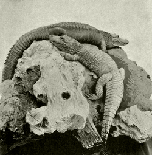

An alligator is a crocodilian in the genus Alligator of the family Alligatoridae. The two living species are the American alligator (A. mississippiensis) and the Chinese alligator (A. sinensis). In addition, several extinct species of alligator are known from fossil remains. Alligators first appeared during the Paleocene epoch about 66 million years ago.
The name "alligator" is probably an anglicized form of el lagarto, the Spanish term for "the lizard", which early Spanish explorers and settlers in Florida called the alligator. Later English spellings of the name included allagarta and alagarto.
An average adult American alligator's weight and length is 360 kg (790 lb) and 4.0 m (13.1 ft), but they sometimes grow to 4.4 m (14 ft) long and weigh over 450 kg (990 lb).[3] The largest ever recorded, found in Louisiana, measured 5.84 m (19.2 ft).[4] The Chinese alligator is smaller, rarely exceeding 2.1 m (6.9 ft) in length. In addition, it weighs considerably less, with males rarely over 45 kg (99 lb). Adult alligators are black or dark olive-brown with white undersides, while juveniles have strongly contrasting white or yellow marks which fade with age.[5] No average lifespan for an alligator has been measured.[6] In 1937, an adult specimen was brought to the Belgrade Zoo in Serbia from Germany. It is now at least 80 years old.[7] Although no valid records exist about its date of birth, this alligator, officially named Muja, is considered the oldest alligator living in captivity.
